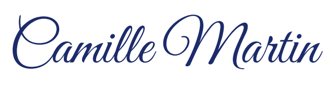
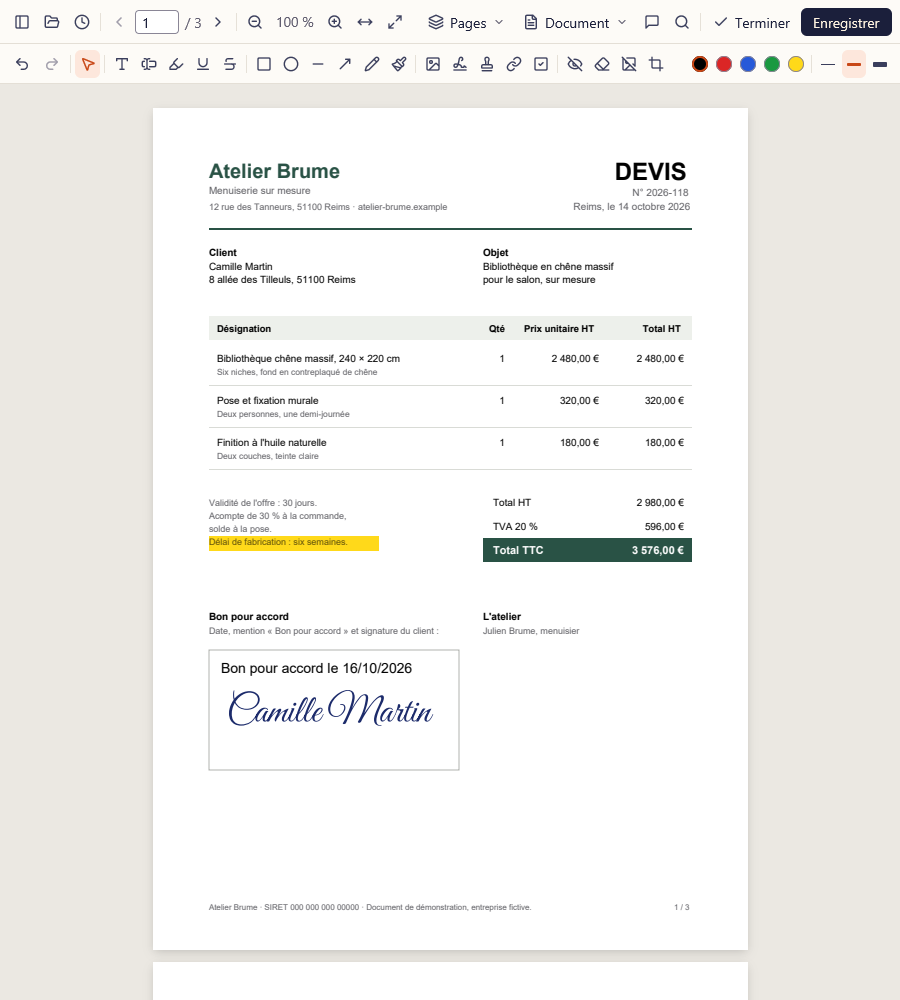
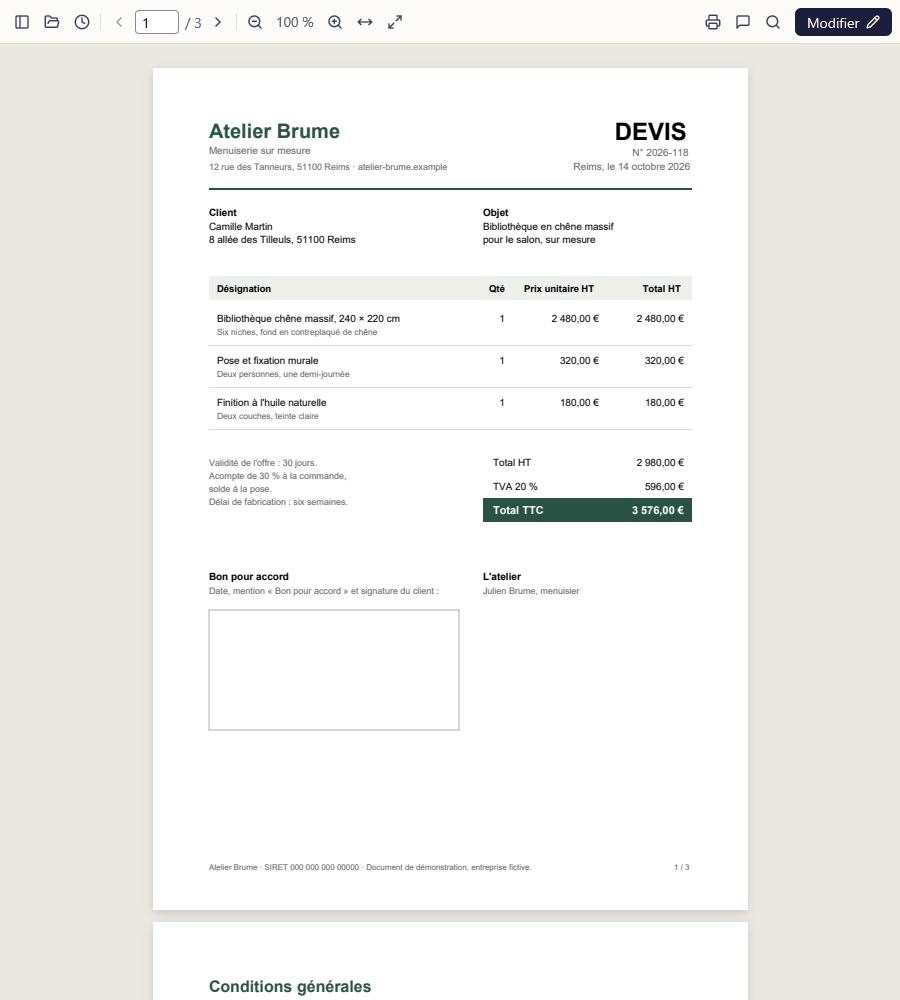
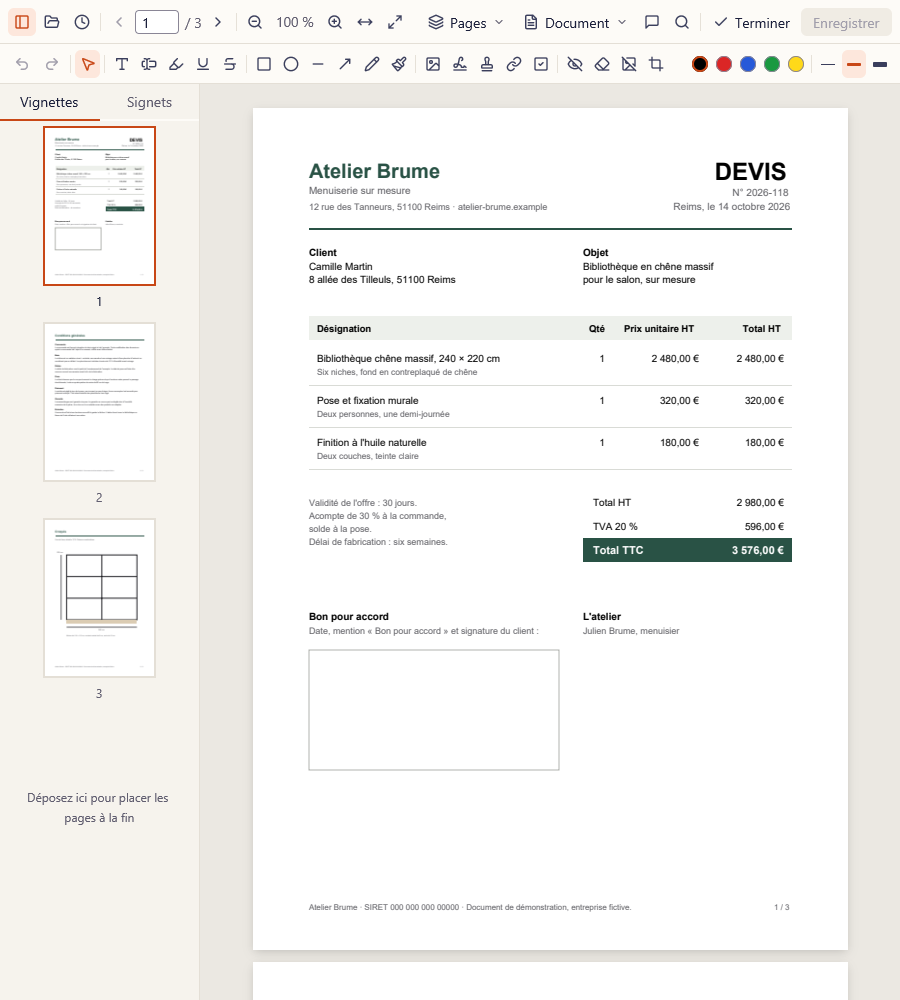
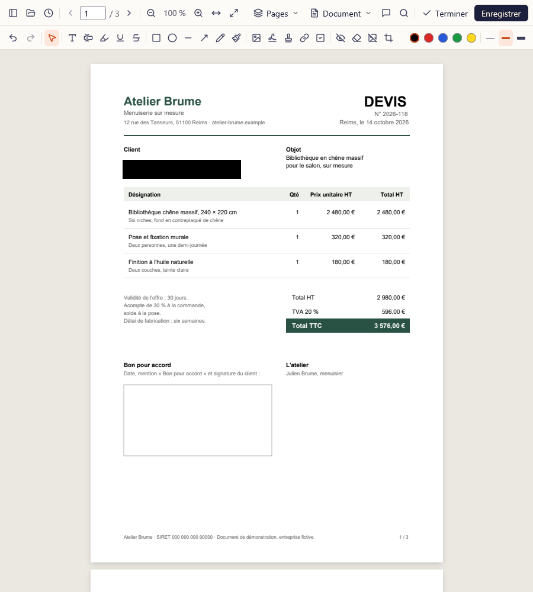
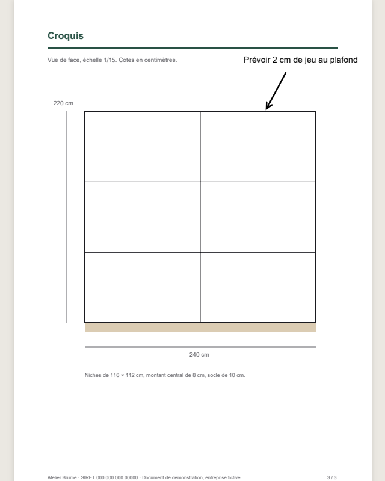

Signez

hors ligne.
Recto est un lecteur et éditeur de PDF gratuit. Lire, annoter, signer, remplir, réorganiser et caviarder : tout se passe sur votre ordinateur, sans compte et sans envoyer vos fichiers.
Windows 10 et 11 · 21 Mo · licence MIT

Essayez votre signature.
- Camille MartinGreat Vibes
- Camille MartinAllura
- Camille MartinSacramento
- Camille MartinDancing Script
Ce sont les quatre styles proposés par Recto pour une signature tapée. Elle peut aussi être tracée à la souris ou importée en image, puis gardée sur votre ordinateur pour la prochaine fois. Rien de ce que vous tapez ici n'est envoyé.
Sans envoi, sans quota.
D'abord, le PDF s'ouvre en lecture.
Comme une visionneuse : on lit, on cherche, on copie, on imprime. Rien ne bouge par erreur.



Tout ce que Recto sait faire, sur une page.

- Lire
- Recherche et copie du texte
- Ctrl F
- Lire
- Miniatures, signets, impression
- Ctrl P
- Lire
- Formulaires remplis sans passer en édition
- Clic
- Annoter
- Texte, surlignage, souligné, barré
- T · H · U
- Annoter
- Formes, flèches, main levée, tampons
- R · A · D · P
- Annoter
- Signature tracée, tapée ou en image
- S
- Annoter
- Annotations déjà présentes, déplacées ou supprimées
- V
- Organiser
- Fusionner, découper, extraire des pages
- Menu Pages
- Organiser
- Pivoter, réordonner, supprimer, recadrer
- Glisser
- Protéger
- Caviardage réel, effacement en blanc
- Contenu retiré
- Protéger
- Mot de passe, métadonnées, compression
- AES-256
- Protéger
- Filigrane, numéros de page, en-têtes
- Menu Document
- Corriger
- Modifier le texte d'origine du PDF
- Bêta
- Corriger
- Rechercher et remplacer, reconnaissance de texte
- OCR
Questions avant d'installer
Recto envoie-t-il mes fichiers quelque part ?
Non. Recto n'a ni compte ni serveur : il lit vos fichiers sur votre disque et les enregistre au même endroit, par une écriture atomique qui ne laisse jamais un PDF à moitié écrit. Il fonctionne sans connexion.
C'est vraiment gratuit ?
Oui, sous licence MIT, sans publicité, sans version payante et sans limite de pages ou de tâches.
Pourquoi Windows affiche-t-il un avertissement à l'installation ?
L'installateur n'est pas encore signé par un certificat de code, alors SmartScreen le signale comme peu connu. Cliquez sur « Informations complémentaires » puis « Exécuter quand même ». Il s'installe pour votre seul compte, sans droits administrateur, et se désinstalle proprement.
Et sur macOS ou Linux ?
Recto est écrit pour les trois systèmes et les paquets (une app macOS et une AppImage) sont prêts à être construits, mais ils n'ont pas encore été testés. Ils viendront dans une prochaine version.
Le caviardage est-il fiable ?
Le texte, les images et les dessins sous un rectangle noir sont retirés du fichier, pas seulement cachés : on ne peut plus les copier ni les retrouver par recherche. Deux limites : un tracé qui dépasse de la zone reste sous le rectangle, et la structure d'accessibilité du document est supprimée. Relisez toujours le fichier exporté.
Peut-on modifier le texte déjà présent dans un PDF ?
Oui, en bêta. Recto réécrit la ligne avec la police d'origine quand elle contient les lettres nécessaires, sinon avec une police proche de votre système. Le texte ne se réorganise pas : une ligne plus longue peut chevaucher la suite. La reconnaissance de texte (OCR) ne lit pour l'instant que les lettres sans accents.
Télécharger Recto
L'installateur ajoute Recto au menu Démarrer et à « Ouvrir avec » pour les PDF, sans remplacer votre lecteur par défaut. Fichier Recto-…-windows-x64-setup.exe, 21 Mo.